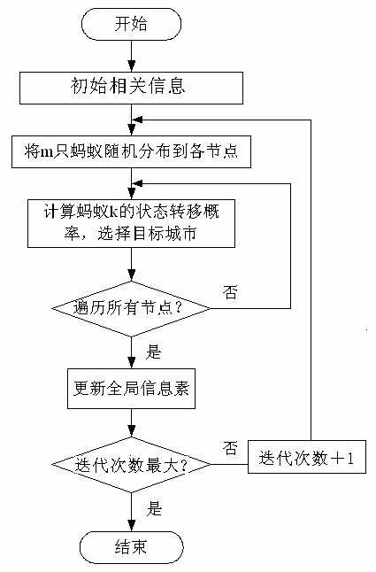

应用背景 │ 具体程序 │ 作者分工
本程序流程图如下：

为模拟蚂蚁实际行为，设：m是蚁群中蚂蚁的数量，是边(i，j)上的信息素轨迹强度，表示第k只蚂蚁在本次循环中留在路径ij上的信息量，本程序中信息素公式更新如下
是城市i到城市j之间的距离，是边(i，j)的能见度，=1/ ，反映由城市i转移到城市j的启发程度，是蚂蚁k从城市i转移到城市j的状态转移概率，j是尚未访问的城市，则状态转移概率p